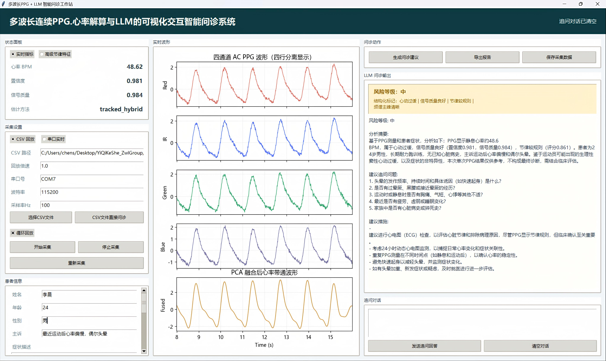

多波长连续 PPG / 心率解算 / 结构化问诊 / 可穿戴原型
基于多波长连续 PPG、 心率解算与 LLM 的 可视化交互智能问诊系统
系统以 STM32F103C8T6 与 MAX86916 完成四通道 AC PPG 采集， 将 PCA 融合、稳健心率解算、DeepSeek-v3.2 辅助问诊、导出交付与可穿戴设计集成为一套完整原型。
四通道多波长 PPG 输入
PCA 融合 + 稳健 BPM
DeepSeek-v3.2 辅助问诊
结构建模 / 原理图 / PCB
产品方向
腕表式可穿戴原型
结构
表壳、表带、表背采集窗口、内部腔体与前端屏显入口已经形成统一的整机表达
基于多波长连续 PPG、
心率解算与 LLM 的可视化交互智能问诊系统
心率解算与 LLM 的可视化交互智能问诊系统
张伟麟小组
医学仪器原理与设计课程设计
工作站系统
工作站系统展示
实时计算并显示心率、高级节律特征、置信度与信号质量等指标；支持 CSV 导入直接问诊与串口实时 PPG 采集分析；可补充患者姓名、年龄、主诉、既往史等结构化信息；提供报告导出、信号数据保存及大模型交互式追问
算法设计
信号处理与心率解算算法链路
四通道 PPG 输入 → 有效采样率估计 → Z-score 标准化 + PCA 融合 → 0.7–3.5 Hz 带通 → 频域 / 自相关 / 峰值候选 → 融合与规则性评分 → 结构化摘要 → LLM 辅助问诊
Core Logic
有效采样率估计
Parameters
根据相邻时间戳中值差倒数推算有效采样率，避免假设固定采样率造成 BPM 偏差。
effective_fs = 1 / median(diff(timestamps))
Parameters
系统从 CSV 回放或串口流接收 Red、IR、Green、Blue 四通道原始 PPG 数据，缓存于 8 秒滑动窗口，每秒触发一轮完整的信号处理与心率解算流水线。每个采样帧由 ChannelFrame 封装，包含 4 通道值和时间戳。
提示词设计
提示词工程：从数字信号到医学洞察
通过结构化数据输入与医学伦理约束，实现严谨的临床辅助逻辑
提示词流水线
build_ppg_summary_payload()
build_messages()
build_follow_up_messages()
DiagnosisResponse
Input Deconstruction
输入解构
算法输出先被压缩为稳定的 JSON 载荷，再进入首轮问诊与追问模板。
"heart_rate_bpm"
138
"rhythm_score"
0.42
"snr_db"
14.1
"possible_flags"
"clinical_context"
心悸反复 + 慢病背景 + 夜间发作更明显
possible_flags 不是装饰字段，而是提示词路由开关。它决定系统是保持基线问诊，还是主动进入更保守的医学辅助逻辑。
System Commands
逻辑中枢
状态标签驱动 Prompt 策略切换，但三条底线始终固定存在。
当节律不规则且伴随慢病背景时，系统必须先提示风险，再组织追问，而不是直接给出诊断结论。
01
角色定位：专业助手
先总结主诉与结构化 PPG 特征，再围绕心悸持续时间、头晕胸闷和既往病史组织追问。
02
安全红线：不予确诊
只输出“房颤风险 / 需进一步评估”这类辅助表达，不替代心电图或医生诊断。
03
异常策略：低质信号保守化
若同时出现置信度下降或信号质量不足，优先建议复测确认，再决定是否保留异常提醒。
处理逻辑：节律不规则被视为高优先级风险线索，输出先强调异常警示，再引导做心电图与线下评估。
Output Standards
输出范式
DiagnosisResponse 将回答收束为风险等级、追问列表与行动建议，避免自由发挥。
节律规则度显著下降，且伴随慢病背景，系统默认使用更谨慎的风险描述。
- 是否出现头晕、黑矇、胸闷或活动耐量下降？
- 既往是否有高血压、糖尿病、房颤或脑卒中史？
- 症状持续多久，夜间或静息时是否更明显？
- 建议尽快完成心电图或动态心电监测。
- 保留发作时间、伴随症状和近期用药记录。
- 若胸痛、晕厥或持续胸闷明显，应尽快线下就医。
样本设计
测试样本设计与算法验证
覆盖极端心动过缓、心动过速与不规则节律的压力测试，结果与预期相符

Algorithm Lens
abnormal_bradycardia_48bpm_fs100.csv
48 BPM 窦缓样本
48 BPM
窦缓样本
心率提取
48.62
Validation Focus
区分生理性低心率与需进一步评估的低速节律，观察 BPM 与规则度是否稳定。
硬件底座
硬件链路总览
MAX86916 将四通道 AC PPG 信号带入系统，MIKROE-4724 完成载板承接，STM32F103C8T6 负责调度与上送，把真实脉搏波稳定送入工作站
Controller
STM32F103C8T6 负责调度、预处理与上送，把硬件底座收束为一条稳定主链路。
可穿戴方向
腕表式产品原型建模
从外观母体、佩戴关系到采集窗口与整机装配，可穿戴方案最终收束为腕表式产品原型
最终上色效果
涵盖外观母体、佩戴关系、侧视轮廓、采集窗口、内部空腔和前端屏显的建模，展望未来产品样式。
先定壳体轮廓
方形圆角外观不是装饰，它先确定气质、边界和后续装配的约束条件，所有功能部件都将在这个轮廓之内收束。
贴腕才像产品
表带、壳体与腕部重心在这一阶段被校准，佩戴姿态、厚度感和真实使用关系一起进入整机判断。
侧剖校准尺度
这张图不负责制造情绪，而是把壳体厚度、边框过渡和贴腕弧线拉回到真实佩戴的工程语境里。
信号入口在表背
采集通孔与环形围挡一起工作，压住漏光与反射，让信号在接触皮肤的那一刻就更可信。
内腔决定整机
PCB 与电池的落位关系在这里被组织成可装配的整机空间，而不是零件之间彼此妥协的临时堆叠。
屏显补全产品感
屏幕位置定义了交互入口与结果呈现方式，让这套原型开始具备面向用户的正面语言。
原理图设计
原理图工程文件展示
覆盖系统框图、核心控制、供电组织、处理器接口与背板连接五个部分
检视视图
系统框图
PCB 设计
PCB工程文件展示
从 3D 装配、双板型布线到外形边界，以检视台方式查看当前板级实现
工程部署
工程化部署与发布设计
从源码开发到实际产品交付，构建稳定且可配置的软件分发体系
发布拓扑
源码目录
打包流程
运行包
工程目录
工程目录树视图
目录以运行入口、配置、原始数据、报告导出和发布包为主线，保证每类产物独立落位。
ppg_llm_workstation/
├─ run_workstation.py
桌面入口
├─ src/ppg_llm_workstation/
核心业务代码
├─ .env / .env.example
配置与模板分离
├─ data/samples/
CSV 原始信号与异常样本
├─ reports/20260419_093011_li_chen_report/
ppg_report.md 单次问诊独立目录
├─ exports/signals/20260419_093011_li_chen/
raw / fused / meta / png 会话隔离
├─ build/ + dist/
PyInstaller 中间产物与运行目录
├─ dist/PPGLLMWorkstation/
单入口 EXE 运行目录
└─ release/PPGLLMWorkstation.zip
最终分发压缩包
DEFAULT_CSV_PATH
REPORT_DIRECTORY
SIGNAL_EXPORT_DIRECTORY
SESSION ISOLATED
打包流水线
打包流水线视图
发布逻辑对齐 build_exe.py：清理构建目录、封装运行环境、复制运行资源，并输出 zip 交付包。
源码准备：入口、配置与目录约束先对齐
run_workstation.py 作为桌面入口，AppConfig 从 .env 解析路径，CSV 回放与串口采集共享统一的数据源接口。
- 入口脚本与
src/ppg_llm_workstation保持清晰分层。 .env负责默认样本、报告目录和导出目录解耦。- 原始数据、报告和导出结果在运行期天然分流。
分发包
分发包视图
用户拿到的是一个可直接运行的交付包：EXE 入口、配置模板、说明文档与运行目录一起下发。
release/
PPGLLMWorkstation.zip
├─
PPGLLMWorkstation.exe
├─
.env
├─
.env.example
├─
README.md
└─
data/ + reports/ + exports/
当前交付焦点
最终交付以 zip 为外层分发壳，内部保留 EXE 入口、配置模板和运行所需目录，避免用户再手工拼装环境。
团队分工
团队分工覆盖全面
不同成员分别支撑系统的总体方案、板级设计、结构建模、算法评测、提示词设计与工程化发布。
总设计
张伟麟
总体方案、硬件原型、核心算法、大语言模型接入、工作站界面与软件集成、汇报页&PPT设计与制作。
原理图设计&PCB设计
黄佳滢
原理图整理、接口规划、电源组织与板级实现方向。
建模设计
冯湘云
腕表式可穿戴外形、壳体与传感器布局方案。
样本设计
陈世佳
异常样本构建、节律场景测试与指标评估设计。
医学提示词设计
王志栋
问诊字段整理、风险表达、追问模板与保守型提示词策略。
工程部署与发布
吴朋峰
EXE 打包发布、目录组织、导出规范与交付流程设计。
PPG采集&心率解算与 大模型问诊的集成
PPG LLM 项目组 / 深圳技术大学 / 张伟麟小组
MAX86916四通道采集
STM32高通+滑动平均
串口上送UART → PC
PC工作站PCA + 带通滤波
心率估计频域+自相关
特征提取BPM / RR / 置信度
LLM问诊提示词驱动
报告导出CSV / MD